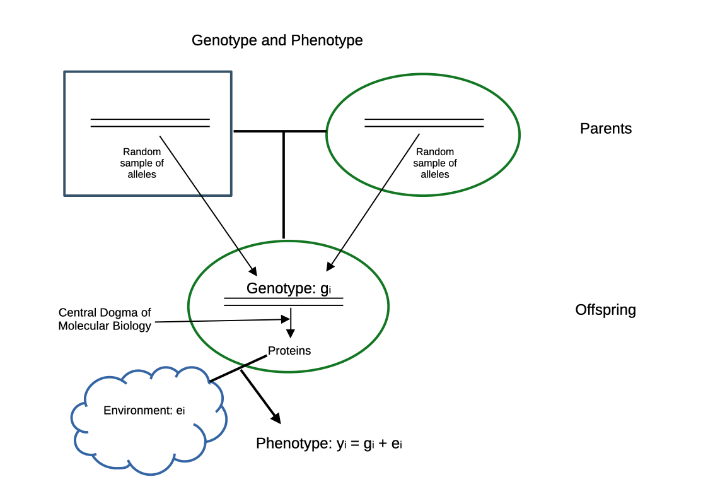

Genetic Evaluation
Breeding Program
New Trait
- New trait to be considered in breeding program
- Why? \(\rightarrow\) Trait is of economic importance
- Want to improve average level of trait in a given population
- How is this done?
- What do we have to do?
Background and Context
- Farms/Enterprise use livestock products as base for economic existence
- Improvements of production efficiency improves sustainability
- Short-term:
- improve management and environment
- select optimal livestock breed / population for given environment
- Long-term:
- improve population at genetic level
- define breeding goal
- select parents such that offspring are “closer” to goal compared to parents
Genetic Improvement
- Genetic improvement happens between parents and offspring
- Parents pass random sample of alleles to offspring
- Goal: select parents that have many “good” alleles to pass to offspring
- Value of alleles quantified by breeding value
- How to find parents with “good” alleles without knowing which genes are important?
\(\rightarrow\) Predict breeding value using Statistical Modeling
Genotype and Phenotype

- Selection based on phenotypes: in-efficient
- Instead: use statistical model to predict breeding value
Statistical Model
- stochastic systems contains many sources of uncertainty
- statistical models can handle uncertainty
- components of a statistical model
- response variable \(y\)
- predictor variables \(x_1, x_2, \ldots, x_k\)
- error term \(e\)
- function \(m(x)\)
How Does A Statistical Model Work?
- predictor variables \(x_1, x_2, \ldots, x_k\) are transformed by function \(m(x)\) to explain the response variable \(y\)
- uncertainty is captured by error term.
- as a formula, for observation \(i\)
\[y_i = m(x_i) + e_i\]
Which function \(m(x)\)?
- class of functions that can be used as \(m(x)\) is infinitely large
- restrict to linear functions of model parameter (\(b_0\) and \(b_1\)), e.g.
\[y_i = b_0 + b_1 * x_i + e_i\]
Which predictor variables?
- In genetic evaluation large variety of information can be used as predictors
- Question, about which predictor variables to use is answered by model selection
Why Model Selection
- Many predictor variables are available
- Are all of them
relevant? - What is the meaning of
relevantin this context?
Example Dataset
| Animal | Breast Circumference | Body Weight | RandPred |
|---|---|---|---|
| 1 | 176 | 471 | 178 |
| 2 | 177 | 463 | 177 |
| 3 | 178 | 481 | 182 |
| 4 | 179 | 470 | 181 |
| 5 | 179 | 496 | 184 |
| 6 | 180 | 491 | 184 |
| 7 | 181 | 518 | 181 |
| 8 | 182 | 511 | 182 |
| 9 | 183 | 510 | 177 |
| 10 | 184 | 541 | 181 |
No Relevance of Predictors
Relevance of Predictors

Fitting a Regression Model
Call:
lm(formula = `Body Weight` ~ RandPred, data = tbl_reg_aug)
Residuals:
Min 1Q Median 3Q Max
-25.867 -17.921 -9.036 19.827 45.133
Coefficients:
Estimate Std. Error t value Pr(>|t|)
(Intercept) 93.511 598.111 0.156 0.880
RandPred 2.223 3.310 0.672 0.521
Residual standard error: 25.66 on 8 degrees of freedom
Multiple R-squared: 0.05338, Adjusted R-squared: -0.06495
F-statistic: 0.4511 on 1 and 8 DF, p-value: 0.5207Fitting a Regression Model II
Call:
lm(formula = `Body Weight` ~ `Breast Circumference`, data = tbl_reg_aug)
Residuals:
Min 1Q Median 3Q Max
-17.3941 -6.5525 -0.0673 9.3707 13.2594
Coefficients:
Estimate Std. Error t value Pr(>|t|)
(Intercept) -1065.115 255.483 -4.169 0.003126 **
`Breast Circumference` 8.673 1.420 6.108 0.000287 ***
---
Signif. codes: 0 '***' 0.001 '**' 0.01 '*' 0.05 '.' 0.1 ' ' 1
Residual standard error: 11.08 on 8 degrees of freedom
Multiple R-squared: 0.8234, Adjusted R-squared: 0.8014
F-statistic: 37.31 on 1 and 8 DF, p-value: 0.000287Multiple Regression
Call:
lm(formula = `Body Weight` ~ `Breast Circumference` + RandPred,
data = tbl_reg_aug)
Residuals:
Min 1Q Median 3Q Max
-17.817 -6.946 -1.337 9.196 13.118
Coefficients:
Estimate Std. Error t value Pr(>|t|)
(Intercept) -1218.2339 352.3805 -3.457 0.010588 *
`Breast Circumference` 8.5321 1.4885 5.732 0.000711 ***
RandPred 0.9879 1.4983 0.659 0.530785
---
Signif. codes: 0 '***' 0.001 '**' 0.01 '*' 0.05 '.' 0.1 ' ' 1
Residual standard error: 11.5 on 7 degrees of freedom
Multiple R-squared: 0.8337, Adjusted R-squared: 0.7862
F-statistic: 17.55 on 2 and 7 DF, p-value: 0.001874Which model is better?
Why not taking all predictors?
- Additional parameters must be estimated from data
- Predictive power decreased with too many predictors (cannot be shown for this data set, because too few data points)
- Bias-variance trade-off
Bias-variance trade-off
- Assume, we are looking for optimum prediction
\[s_i = \sum_{r=1}^q \hat{\beta}_{j_r}x_{ij_r}\] with \(q\) relevant predictor variables
- Average mean squared error of prediction \(s_i\)
\[MSE = n^{-1}\sum_{i=1}^n E\left[(m(x_i) - s_i)^2 \right]\] where \(m(.)\) denotes the linear function of the unknown true model.
Bias-variance trade-off II
- MSE can be split into two parts
\[MSE = n^{-1}\sum_{i=1}^n \left( E\left[s_i \right] - m(x_i) \right)^2 + n^{-1}\sum_{i=1}^n var(s_i) \]
where \(n^{-1}\sum_{i=1}^n \left( E\left[s_i \right] - m(x_i) \right)^2\) is called the squared bias
- Increasing \(q\) leads to reduced bias but increased variance (\(var(s_i)\))
- Hence, find \(s_i\) such that MSE is minimal
- Problem: cannot compute MSE because \(m(.)\) is not known
\(\rightarrow\) estimate MSE
Mallows \(C_p\) statistic
- For a given model \(\mathcal{M}\), \(SSE(\mathcal{M})\) stands for the residual sum of squares.
- MSE can be estimated as
\[\widehat{MSE} = n^{-1} SSE(\mathcal{M}) - \hat{\sigma}^2 + 2 \hat{\sigma}^2 |\mathcal{M}|/n\]
where \(\hat{\sigma}^2\) is the estimate of the error variance of the full model, \(SSE(\mathcal{M})\) is the residual sum of squares of the model \(\mathcal{M}\), \(n\) is the number of observations and \(|\mathcal{M}|\) stands for the number of predictors in \(\mathcal{M}\)
\[C_p(\mathcal{M}) = \frac{SSE(\mathcal{M})}{\hat{\sigma}^2} - n + 2 |\mathcal{M}|\]
Searching The Best Model
- Exhaustive search over all sub-models might be too expensive
- For \(p\) predictors there are \(2^p - 1\) sub-models
- With \(p=16\), we get \(6.5535\times 10^{4}\) sub-models
\(\rightarrow\) step-wise approaches
Forward Selection
- Start with smallest sub-model \(\mathcal{M}_0\) as current model
- Include predictor that reduces SSE the most to current model
- Repeat step 2 until all predictors are chosen
\(\rightarrow\) results in sequence \(\mathcal{M}_0 \subseteq \mathcal{M}_1 \subseteq \mathcal{M}_2 \subseteq \ldots\) of sub-models
- Out of sequence of sub-models choose the one with minimal \(C_p\)
Backward Selection
- Start with full model \(\mathcal{M}_0\) as the current model
- Exclude predictor variable that increases SSE the least from current model
- Repeat step 2 until all predictors are excluded (except for intercept)
\(\rightarrow\) results in sequence \(\mathcal{M}_0 \supseteq \mathcal{M}_1 \supseteq \mathcal{M}_2 \supseteq \ldots\) of sub-models
- Out of sequence choose the one with minimal \(C_p\)
Considerations
- Whenever possible, choose backward selection, because it leads to better results
- If \(p \geq n\), only forward is possible, but then consider LASSO
Alternative Selection Criteria
- AIC or BIC, requires distributional assumptions.
- AIC is implemented in
MASS::stepAIC() - Adjusted \(R^2\) is a measure of goodness of fit, but sometimes is not conclusive when comparing two models
- Try in exercise
Genetic Variation
- Requirement for trait to be considered in breeding goal
- Breeding means improvement of next generation via selection and mating
- Only genetic (additive) components are passed to offspring
- Selection should be based on genetic component of trait
- Selection only possible with genetic variation
\(\rightarrow\) genetic variation indicates how good characteristics are passed from parents to offspring
\(\rightarrow\) measured by heritability \(h^2 = \frac{\sigma_a^2}{\sigma_p^2}\)
Two Traits

Problems
- Genetic components cannot be observed or measured
- Must be estimated from data
- Data are mostly phenotypic
\(\rightarrow\) topic of variance components estimation
- Model based, that means connection between phenotypic measure and genetic component are based on certain model
\[p = g + e\]
with \(cov(g,e) = 0\)
- Goal: separate variation due to \(g\) (\(\sigma_a^2\)) from phenotypic variation
Example of Variance Components Separation
- Estimation of repeatability
- Given repeated measurements of same trait at the same animal
- Repeatability means variation of measurements at the same animal is smaller than variation between measurements at different animals
Repeatability Plot
Model
\[\begin{equation} y_{ij} = \mu + t_i + \epsilon_{ij} \notag \end{equation}\]
Animal Model
- trait of interest as response variable (\(y\))
- fixed effects (\(b\)) as known part of environment
- random animal effect, corresponds to breeding values (\(u\))
\[y = Xb + Zu + e\]
with
- vector \(e\) as random residuals and
- matrices \(X\) and \(Z\) as design matrices
Estimates and Predictions
- solution leading to estimates of fixed effects
\[\hat{b} = (X^TV^{-1}X)^{-}X^TV^{-1}y\]
- predictions for random effects
\[\hat{u} = GZ^TV^{-1}(y - X\hat{b})\]
with
- \(G = var(u)\)
- \(V = var(y)\)
Mixed Model Equations
Equivalent solutions are obtained via
\[\left[ \begin{array}{lr} X^T R^{-1} X & X^T R^{-1} Z \\ Z^T R^{-1} X & Z^T R^{-1} Z + G^{-1} \end{array} \right] \left[ \begin{array}{c} \hat{\beta} \\ \hat{u} \end{array} \right] = \left[ \begin{array}{c} X^T R^{-1} y \\ Z^T R^{-1} y \end{array} \right]\]
with
- \(G = A * \sigma_u^2\)
where \(A\) is pedigree-based relationship matrix and \(\sigma_u^2\) the genetic additive variance
Single-Step Genomic Breeding Values
- Assume all animals have genotypes
\[y = Xb + Zu + e\]
\[\left[ \begin{array}{lr} X^T R^{-1} X & X^T R^{-1} Z \\ Z^T R^{-1} X & Z^T R^{-1} Z + H^{-1} \end{array} \right] \left[ \begin{array}{c} \hat{\beta} \\ \hat{u} \end{array} \right] = \left[ \begin{array}{c} X^T R^{-1} y \\ Z^T R^{-1} y \end{array} \right]\]
- \(H = A_G * \sigma_u^2\)
where \(A_G\) is the genomic relationship matrix and \(\sigma_u^2\) the genetic additive variance